3.1 Chromosomal theory of Inheritance
3.2 Linkage - Eye colour in Drosophila and Seed colour in Maize
3.3 Crossing over, Recombination and Gene mapping
3.4 Multiple alleles
3.5 Mutation-types, mutagenic agents and their significance.
In the previous chapter you have learned about Mendelian genetics, now you are going to be study with deviations of concepts related to Mendelian genetics and chromosomal theory of inheritance. You must recall the structure of chromosome and cell division from eleventh standard.
G. J. Mendel OPEN BRACKET 1865 CLOSE BRACKET studied the inheritance of well-defined characters of pea plant but for several reasons it was unrecognized till 1900. Three scientists OPEN BRACKET de Vries, Correns and Tschermak CLOSE BRACKET independently rediscovered Mendel’s results on the inheritance of characters. Various cytologists also observed cell division due to advancements in microscopy. This led to the discovery of structures inside nucleus. In eukaryotic cells, worm-shaped structures formed during cell division are called chromosomes OPEN BRACKET colored bodies, visualized by staining CLOSE BRACKET. An organism which possesses two complete basic sets of chromosomes are known as diploid. A chromosome consists of long, continuous coiled piece of DNA in which genes are arranged in linear order. Each gene has a definite position OPEN BRACKET locus CLOSE BRACKET on a chromosome. These genes are hereditary units. Chromosomal theory of inheritance states that Mendelian factors OPEN BRACKET genes CLOSE BRACKET have specific locus OPEN BRACKET position CLOSE BRACKET on chromosomes and they carry information from one generation to the next generation.
The important cytological findings related to the chromosome theory of inheritance are
given below.
Wilhelm Roux OPEN BRACKET 1883 CLOSE BRACKET postulated that the chromosomes of a cell are responsible for transferring heredity.
Montgomery OPEN BRACKET 1901 CLOSE BRACKET was first tosuggest occurrence of distinct pairs ofchromosomes and he also concluded thatmaternal chromosomes pair with paternalchromosomes only during meiosis.
T. Boveri OPEN BRACKET 1902 CLOSE BRACKET supported the idea that the chromosomes contain genetic determiners, and he was largely responsible for developing the chromosomal theory of inheritance.
W.S. Sutton OPEN BRACKET 1902 CLOSE BRACKET, a young American student independently recognized a parallelism OPEN BRACKET similarity CLOSE BRACKET between the behaviour of chromosomes and Mendelian factors during gamete formation.
Sutton and Boveri OPEN BRACKET 1903 CLOSE BRACKET independently proposed the chromosome theory of inheritance. Sutton united the knowledge of chromosomal segregation with Mendelian principles and called it chromosomal theory of inheritance.
Somatic cells of organisms are derived from the zygote by repeated cell division OPEN BRACKET mitosis CLOSE BRACKET. These consist of two identical sets of chromosomes. One set is received from female parent OPEN BRACKET maternal CLOSE BRACKET and the other from male parent OPEN BRACKET paternal CLOSE BRACKET. These two chromosomes constitute the homologous pair.
Chromosomes retain their structural uniqueness and individuality throughout the life cycle of an organism.
Each chromosome carries specific determiners or Mendelian factors which are now termed as genes.
The behaviour of chromosomes during the gamete formation OPEN BRACKET meiosis CLOSE BRACKET provides evidence to the fact that genes or factors are located on chromosomes.
Around twentieth century cytologists established that, generally the total number of chromosomes is constant in all cells of a species. A diploid eukaryotic cell has two haploid sets of chromosomes, one set from each parent. All somatic cells of an organism carry the same genetic complement. The behaviour of chromosomes during meiosis not only explains Mendel’s principles but leads to new and different approaches to study about heredity.
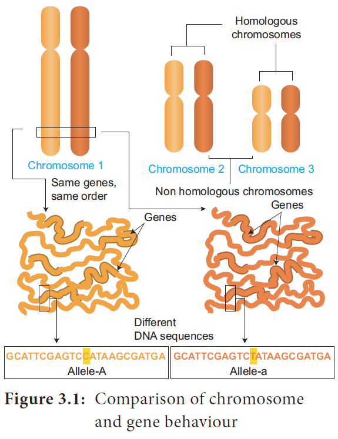
Figure 3.1: Comparison of chromosome and gene behaviour
Table 3. 1: Parallelism between Mendelian factors and chromosomal behaviour.
Mendelian factors |
Chromosomes behaviour |
Alleles of a factor occur in pair |
Chromosomes occur in pairs |
Similar or dissimilar alleles of a factor separate during the gamete formation |
The homologous chromosomes separate during meiosis |
Mendelian factors can assort independently |
The paired chromosomes can separate independently during meiosis but the linked genes in the same chromosome normally do not assort independently. |
Table 3. 2 : Number of Chromosomes
Organism |
Number of chromosomes OPEN BRACKET 2n CLOSE BRACKET |
Adder’s tongue fern OPEN BRACKET Ophioglossum CLOSE BRACKET |
1262 |
Horsetail OPEN BRACKET Equisetum CLOSE BRACKET |
216 |
Giant sequoia |
22 |
Arabidopsis |
10 |
Sugarcane |
80 |
Apple |
34 |
Rice |
24 |
Potato |
48 |
Maize |
20 |
Onion |
16 |
Haplopappus gracilis |
4 |
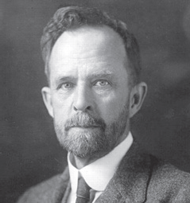
Thomas Hunt Morgan OPEN BRACKET 1933 CLOSE BRACKET received Nobel Prize in Physiology or Medicine for his
discoveries concerning the role played by chromosomes in heredity.
Box item
Fossil Genes: Some of the junk DNA is made up of pseudo genes, the sequences presence in that was once working genes. They lost their ability to make proteins. They tell the story of evolution through fossilized parts.
The genes which determine the character of an individual are carried by the chromosomes. The genes for different characters may be present either in the same chromosome or in different chromosomes. When the genes are present in different chromosomes, they assort independently according to Mendel’s Law of Independent Assortment. Biologists came across certain genetic characteristics that did not assort out independently in other organisms after Mendel’s work. One such case was reported in Sweet pea OPEN BRACKET Lathyrus odoratus CLOSE BRACKET by William Bateson and Reginald C. Punnet in 1906. They crossed one homozygous strain of sweet peas having purple flowers and long pollen grains with another homozygous strain having red flowers and round pollen grains. All the F1 progenies had purple flower and long pollen grains indicating purple flower long pollen OPEN BRACKET capital PL SLASH capital PL CLOSE BRACKET was dominant over red flower round pollen OPEN BRACKET small pl SLASH small pl CLOSE BRACKET. When they crossed the F1 with double recessive parent OPEN BRACKET test cross CLOSE BRACKET in results F2 progenies did not exhibit in 1 is to 1 is to 1 is to 1 ratio as expected with independent assortment. A greater number of F2 plants had purple flowers and long pollen or red flowers and round pollen. So they concluded that genes for purple colour and long pollen grain and the genes for red colour and round pollen grain were found close together in the same homologous pair of chromosomes. These genes do not allow themselves to be separated. So they do not assort independently. This type of tendency of genes to stay together during separation of chromosomes is called Linkage.
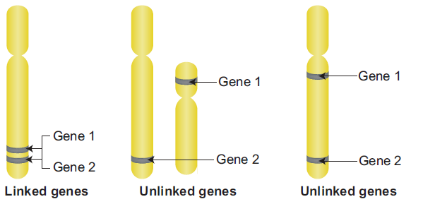
Figure 3.2: Arrangement of linked and unlinked genes on chromosome
Genes located close together on the same chromosome and inherited together are called linked genes. But the two genes that are sufficiently far apart on the same chromosome are called unlinked genes or syntenic genes OPEN BRACKET Figure 3.3 CLOSE BRACKET. Such condition is known as synteny. It is to be differentiated by the value of recombination frequency. If the recombination frequency value is more than 50 percentage the two genes show unlinked. when the recombination frequency value is less than 50 percentage, they show linked. Closely located genes show strong linkage, while genes widely located show weak linkages.
The two dominant alleles or recessive alleles occur in the same homologous chromosomes, tend to inherit together into same gamete are called coupling or cis configuration OPEN BRACKET Figure: 3.5 CLOSE BRACKET. If dominant or recessive alleles are present on two different, but homologous chromosomes they inherit apart into different gamete are called repulsion or trans configuration OPEN BRACKET Figure: 3. 6 CLOSE BRACKET.
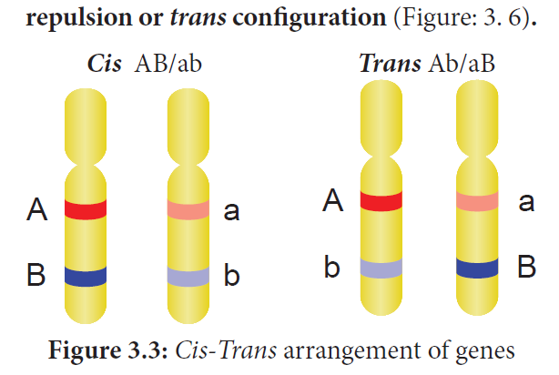
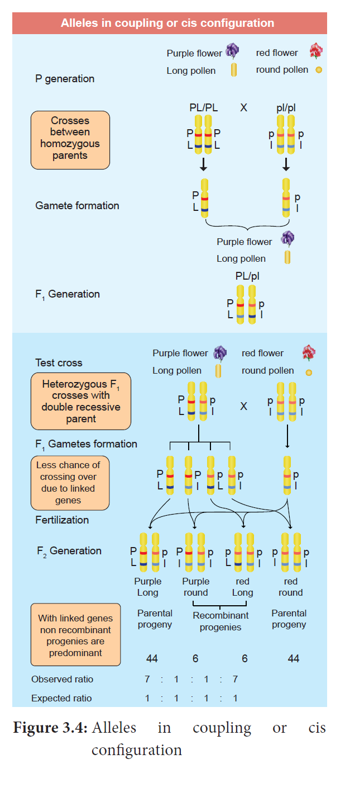
Figure 3.4: Alleles in coupling or cis configuration
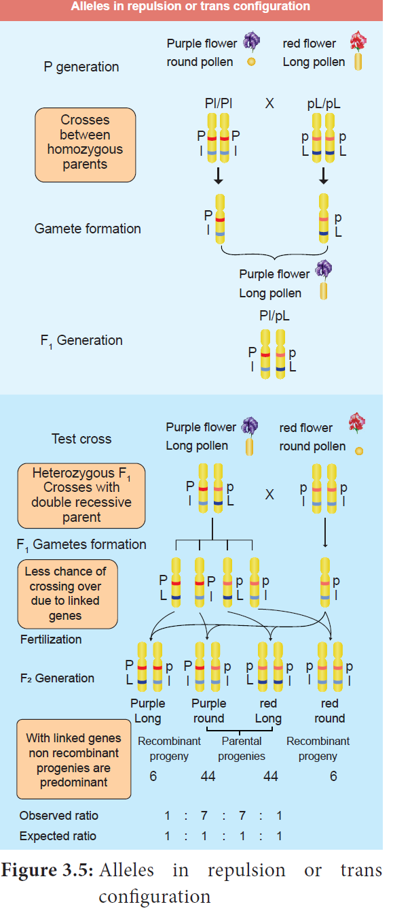
T.H. Morgan found two types of linkage. They are complete linkage and incomplete linkage depending upon the absence or presence of new combination of linked genes.
If the chances of separation of two linked genes are not possible those genes always remain together as a result, only parental combinations are observed. The linked genes are located very close together on the same chromosome such genes do not exhibit crossing over. This phenomenon is called complete linkage. It is rare but has been reported in male Drosophila.
C.B Bridges OPEN BRACKET 1919 CLOSE BRACKET discovered that crossing over is completely absent in some species of male Drosophila.
If two linked genes are sufficiently apart, the chances of their separation are possible. As a result, parental and non-parental combinations are observed. The linked genes exhibit some crossing
over. This phenomenon is called incomplete linkage. This was observed in maize. It was reported by Hutchinson.
The groups of linearly arranged linked genes on a chromosome are called Linkage groups. In any species the number of linkage groups corresponds to the number haploid set of chromosomes. Example:
Name of organism |
Linkage groups |
Mucor |
2 |
Drosophila |
4 |
Sweet pea |
7 |
Neurospora |
7 |
Maize |
10 |
Table 3.3 : linkage groups.in.some organism
Linkage and crossing over are two processes that have opposite effects. Linkage keeps particular genes together but crossing over mixes them. The differences are given below.
Linkage |
Crossing over |
1. The genes present on chromosome stay close together |
It leads to separation of linked genes |
2. It involves same chromosome of homologous chromosome |
It involves exchange of segments between non-sister chromatids of homologous chromosome. |
3. It reduces new gene combinations |
It increases variability by forming new gene combinations. lead to formation of new organism |
Table 3.4: Differences between linkage and crossing over
Crossing over is a biological process that produces new combination of genes by interchanging the corresponding segments between non-sister chromatids of homologous pair of chromosomes. The term 'crossing over' was coined by Morgan OPEN BRACKET 1912 CLOSE BRACKET. It takes place during pachytene stage of prophase I of meiosis. Usually crossing over occurs in germinal cells during gametogenesis. It is called meiotic or germinal crossing over. It has universal occurrence and has great significance. Rarely, crossing over occurs in somatic cells during mitosis. It is called somatic or mitotic crossing over.
Crossing over is a precise process that includes stages like synapsis, tetrad formation, cross over and terminalization.
Intimate pairing between two homologous chromosomes is initiated during zygotene stage of prophase 1 of meiosis I. Homologous chromosomes are aligned side by side resulting in a pair of homologous chromosomes called bivalents. This pairing phenomenon is called synapsis or syndesis. It is of three types,
1 Procentric synapsis: Pairing starts from middle of the chromosome.
2 Proterminal synapsis: Pairing starts from the telomeres.
3 Random synapsis: Pairing may start from anywhere.
Each homologous chromosome of a bivalent begin to form two identical sister chromatids, which remain held together by a centromere. At this stage each bivalent has four chromatids. This stage is called tetrad stage.
After tetrad formation, crossing over occurs in pachytene stage. The non-sister chromatids of homologous pair make a contact at one or more points. These points of contact between nonsister chromatids of homologous chromosomes are called Chiasmata OPEN BRACKET singular-Chiasma CLOSE BRACKET. At chiasma, cross-shaped or X-shaped structures are formed, where breaking and rejoining of two chromatids occur. This results in reciprocal exchange of equal and corresponding segments
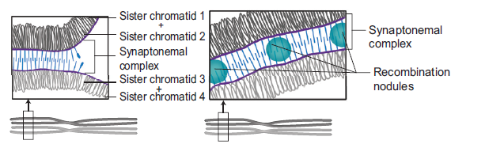
Figure 3.6: Structure of Synaptonemal Complex
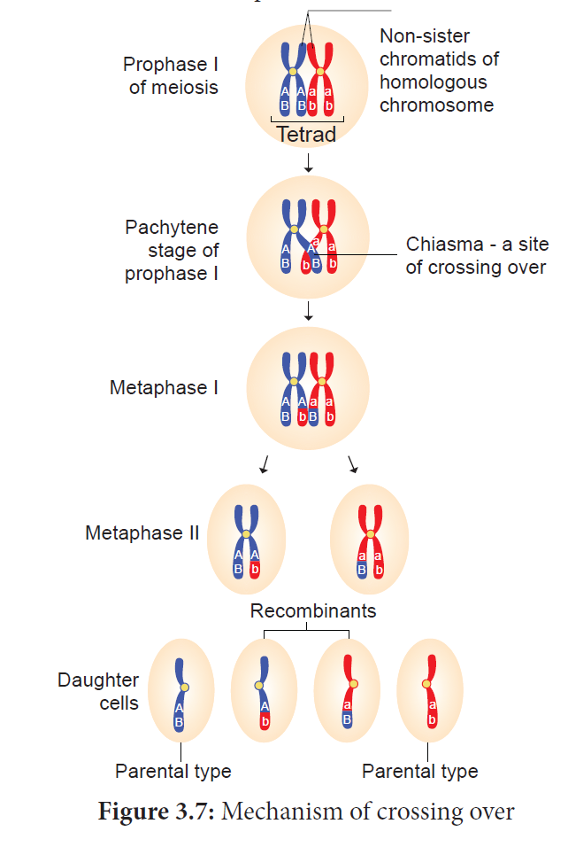
After crossing over, chiasma starts to move towards the terminal end of chromatids. This is known as terminalisation. As a result, complete separation of homologous chromosomes occurs. OPEN BRACKET Figure 3.10 CLOSE BRACKET
Box item
Consider two hypothetical recessive autosomal genes a and b, where a heterozygote is testcrossed to a double homozygous mutant. Predict the phenotypic ratios under the following conditions:
OPEN BRACKET a CLOSE BRACKET a and b are located on separate autosomes.
OPEN BRACKET b CLOSE BRACKET a and b are linked on the same autosome but are so far apart that a crossover occurs
between them.
OPEN BRACKET c CLOSE BRACKET a and b are linked on the same autosome but are so close together that a crossover almost
never occurs.
Crossing over occurs in all organisms like bacteria, yeast, fungi, higher plants and animals.
Its importance is
Exchange of segments leads to new gene combinations which plays an important role in evolution.
Studies of crossing over reveal that genes are arranged linearly on the chromosomes.
Genetic maps are made based on the frequency of crossing over.
Crossing over helps to understand the nature and mechanism of gene action.
If a useful new combination is formed it can be used in plant breeding.
Crossing over results in the formation of new combination of characters in an organism called recombinants. In this, segments of DNA are broken and recombined to produce new combinations of alleles. This process is called Recombination.
The percentage of recombinant progeny in a cross is called recombination frequency. The recombination frequency OPEN BRACKET cross over frequency CLOSE BRACKET OPEN BRACKET RF CLOSE BRACKET is calculated by using the following formula.
RF is equal to Total number of Recombinations divided by Total number of Off springs into 100
Genes are present in a linear order along the chromosome. They are present in a specific location called locus OPEN BRACKET plural: loci CLOSE BRACKET. The diagrammatic representation of position of genes and related distances between the adjacent genes is called genetic mapping. It is directly proportional to the frequency of recombination between them. It is also called as linkage map. The concept of gene mapping was first developed by Morgan’s student Alfred H Sturtevant in 1913. It provides clues about where the genes lies on that chromosome.
The unit of distance in a genetic map is called a map unit OPEN BRACKET m.u CLOSE BRACKET. One map unit is equivalent to one percent of crossing over OPEN BRACKET Figure 4. CLOSE BRACKET. One map unit is also called a centimorgan OPEN BRACKET cM CLOSE BRACKET in honour of T.H. Morgan. 100 centimorgan is equal to one Morgan OPEN BRACKET M CLOSE BRACKET. For example: A distance between A and B genes is estimated to be 3.5 map units. It is equal to 3.5 centimorgans or 3.5 percentage or 0.035 recombination frequency between the genes.
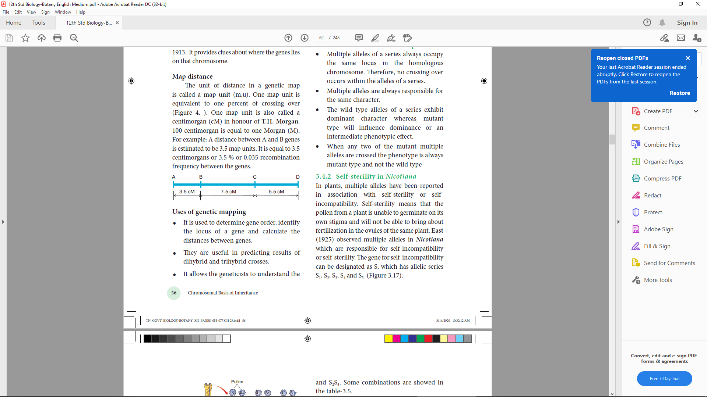
It is used to determine gene order, identify the locus of a gene and calculate the
distances between genes.
They are useful in predicting results of dihybrid and trihybrid crosses.
It allows the geneticists to understand the overall genetic complexity of particular organism.
A given phenotypic trait of an individual depends on a single pair of genes, each of which occupies a specific position called the locus on homologous chromosome. When any of the three or more allelic forms of a gene occupy the same locus in a given pair of homologous chromosomes, they are said to be called multiple alleles.
There may be multiple alleles within the population, but individuals have only two of those alleles. Why QUESTION MARK
Multiple alleles of a series always occupy the same locus in the homologous chromosome. Therefore, no crossing over occurs within the alleles of a series.
Multiple alleles are always responsible for the same character.
The wild type alleles of a series exhibit dominant character whereas mutant type will influence dominance or an intermediate phenotypic effect.
When any two of the mutant multiple alleles are crossed the phenotype is always mutant type and not the wild type
In plants, multiple alleles have been reported in association with self-sterility or Self incompatibility. Self-sterility means that the pollen from a plant is unable to germinate on its own stigma and will not be able to bring about fertilization in the ovules of the same plant. East OPEN BRACKET 1925 CLOSE BRACKET observed multiple alleles in Nicotiana which are responsible for self-incompatibility or self-sterility. The gene for self-incompatibility can be designated as S, which has allelic series S1, S2, S3, S4 and S5 OPEN BRACKET Figure 3.8 CLOSE BRACKET.
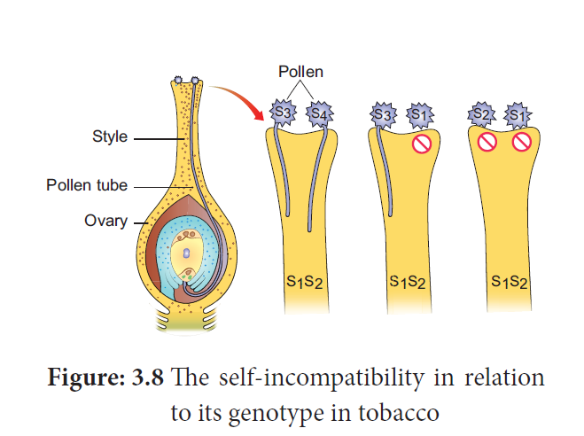
Figure: 3.8 The self-incompatibility in relation to its genotype in tobacco
The cross-fertilizing tobacco plants were not always homozygous as S1S1 or S2S2, but all plants were heterozygous as S1S2, S3S4, S5S6. When crosses were made between different S1S2 plants, the pollen tube did not develop normally. But effective pollen tube development was observed when crossing was made with other than S1S2 for example S3S4.
When crosses were made between seed parents with S1S2 and pollen parents with S2S3, two kinds of pollen tubes were distinguished. Pollen grains carrying S2 were not effective, but the pollen grains carrying S3 were capable of fertilization. Thus, from the cross S1S2XS3S4, all the pollens were effective and four kinds of progeny resulted: S1S3, S1S4, S2S3 and S2S4. Some combinations are showed in the table-3.5.
Female parent (stigma spot) |
Male parent (pollen source) |
|
|
|
S1 S2 |
S2 S3 |
S3 S4 |
S1 S2 |
SELF STERILE |
S3 S2 S3 S1 |
S3 S1 S3 S2 S4 S1 S4 S2
|
S2 S3 |
S1 S2 S1S3 |
SELF STERILE |
S4 S2 S4 S3 |
S3 S4 |
S1 S3 S1 S4 S2 S3 S2 S4 |
S2 S3 S2 S4 |
SELF STERILE |
Table: 3.5. Different combinations of progeny in self-incompatibility
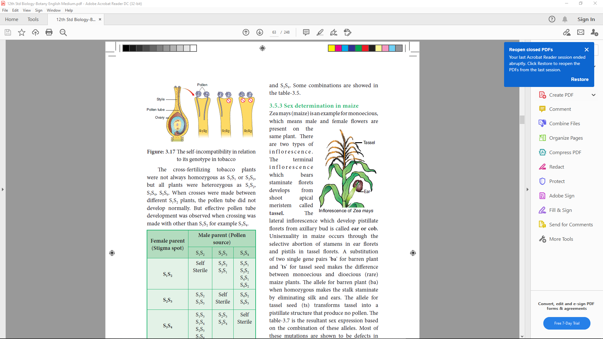
Inflorescence of Zea mays
Zea mays OPEN BRACKET maize CLOSE BRACKET is an example for monoecious, which means male and female flowers are present on the same plant. There are two types of inflorescence The terminal inflorescence which bears staminate florets develops from shoot apical meristem called tassel. The lateral inflorescence which develop pistillate florets from axillary bud is called ear or cob. Unisexuality in maize occurs through the selective abortion of stamens in ear florets and pistils in tassel florets. A substitution of two single gene pairs 'ba' for barren plant and 'ts' for tassel seed makes the difference between monoecious and dioecious OPEN BRACKET rare CLOSE BRACKET maize plants. The allele for barren plant OPEN BRACKET ba CLOSE BRACKET when homozygous makes the stalk staminate by eliminating silk and ears. The allele for tassel seed OPEN BRACKET ts CLOSE BRACKET transforms tassel into a pistillate structure that produce no pollen. The table 3.6is the resultant sex expression based on the combination of these alleles.Most of these mutations are shown to be defects in gibberellin biosynthesis. Gibberellins play an important role in the suppression of stamens in florets on the ears.
Genotype |
DominantSLASH recessive |
Modification |
Sex |
Barren SLASH Barren Tassel SLASH tassel |
Double recessive |
Lacks silk on the stalk, but transformed tassel to pistil |
Rudimentary female |
Barren SLASH barren Tassel plus SLASH tassel plus |
Recessive and dominant |
Lacks silk and have tassel |
Male |
barren dominant SLASH barren dominant tassel recessive SLASH ts recessive |
Double dominant |
Have both tassel and cob |
Monoecious |
Barren dominant SLASH barren dominant Tassel SLASH tassel |
Dominant and recessive |
Bears cob and lacks tassel |
Normal female |
Table 3.6: Sex determination in Maize OPEN BRACKET Superscript OPEN BRACKET plus CLOSE BRACKET denotes dominant character CLOSE BRACKET
Genetic variation among individuals provides the raw material for the ultimate source of evolutionary changes. Mutation and recombination are the two major processes responsible for genetic variation. A sudden change in the genetic material of an organisms is called mutation. The term mutation was introduced by Hugo de Vries OPEN BRACKET 1901 CLOSE BRACKET while he has studying on the plant, evening primrose OPEN BRACKET Oenothera lamarkiana CLOSE BRACKET and proposed ‘Mutation theory’. There are two broad types of changes in genetic material. They are point mutation and chromosomal mutations.
Mutational events that take place within individual genes are called gene mutations or point mutation, whereas the changes occur in structure and number of chromosomes is called chromosomal mutation. Agents which are responsible for mutation are called mutagens, that increase the rate of mutation. Mutations can occur either spontaneously or induced. The production of mutants through exposure of mutagens is called mutagenes is , and the organism is said to be mutagenized.
Mutant Leaf
Let us see the two general classes of gene mutation:
Mutations affecting single base or base pair of DNA are called point mutation
Mutations altering the number of copies of a small repeated nucleotide sequence within a gene
a No Mutation
Wild type protein produced.
b Transition Mutation
changes a purine nucleotide to another pruine or pyrimiddine to another pyrimidine
c Transiversion mutation
single purine changed to pyrimidine or vice versa.
d Missense mutation
The new codon encodes a different amino acid due to transition mutation.
e non sense mutation
The new codon is a stop codon open bracket UAA close bracket due to transition mutation , it leads to premature termination translation
f silent mutation
The new codon encodes the same amino acid after transition mutation
g frame shift mutation
Addition or Deletion of one nucleotide, change the reading frame results completely different translation
Figure 3.9 Types of point mutation
Serial number |
Basis of classification |
Major types of mutations |
Major features |
Serial number 1 |
origin |
spontaneous |
Occurs in the absence of known mutagen |
Serial number 1 |
origin |
induced |
Occurs in the presence of known mutagen |
Serial number 2 |
Cell type |
somatic |
Occurs in non reproductive cells |
Serial number 2 |
Cell type |
Germ line |
Occurs in reproductive cells |
Serial number 3 |
Effect on function |
Loss of function (knockout null ) |
Eliminates norml function |
Serial number 3 |
Effect on function |
Hypomorphic (leaky) |
Reduces normal function |
Serial number 3 |
Effect on function |
Hypermorphic |
Increases normal function |
Serial number 3 |
Effect on function |
Gain of function(ectopic expression) |
Expressed at incorrect time or inappropriate cells |
Serial number 4 |
Molecular change |
Nucleotide substitution transition |
A base pair in D N A duplex is replaced with a different base pair Purine to purine (A gives G) or pyrimidine to pyrimidine(T gives C) |
Serial number 4 |
Molecular change |
Transversion |
Purine to pyrimidine (A gives T) or pyrimidine to purine (C gives G) |
Serial number 4 |
Molecular change |
Insertion |
One or more extra nucleotides are present |
Serial number 4 |
Molecular change |
deletion |
One or more nucleotides are missing |
Serial number 5 |
Effect on translation |
silent |
No change in amino acid encoded |
Serial number 5 |
Effect on translation |
Missense (non synonymous) |
Change in amino acid encoded |
Serial number 5 |
Effect on translation |
Nonsense (termination) |
Creates translation termination codon (U A A,U A G,OR U GA ) |
Serial number 5 |
Effect on translation |
Frameshift |
Shift Triplet Reading Of Codons out of correct phase
|
Table 3.7: Major types of mutations
It refers to alterations of single base pairs of D N A or of a small number of adjacent base pairs
Point mutation in D N A are categorised into two main types. They are base pair substitutions and base pair insertions or deletions. Base substitutions are mutations in which there is a change in the D N A such that one base pair is replaced by another. It can be divided into two subtypes: transitions and transversions. Addition or deletion mutations are actually additions or deletions of nucleotide pairs and also called base pair addition or deletions. Collectively, they are termed indel mutations OPEN BRACKET for insertion-deletion CLOSE BRACKET.
Substitution mutations or indel mutations affect translation. Based on these different types of mutations are given below.
The mutation that changes one codon for an amino acid into another codon for that same amino acid are called Synonymous or silent mutations. The mutation where the codon for one amino acid is changed into a codon for another amino acid is called Missense or non-synonymous mutations. The mutations where codon for one amino acid is changed into a termination or stop codon is called Nonsense mutation. Mutations that result in the addition or deletion of a single base pair of D N A that changes the reading frame for the translation process as a result of which there is complete loss of normal protein structure and function are called Frameshift mutations OPEN BRACKET Figure: 3.19 CLOSE BRACKET.
The factors which cause genetic mutation are called mutagenic agents or mutagens. Mutagens
are of two types, physical mutagen and chemical mutagen. Muller OPEN BRACKET 1927 CLOSE BRACKET was the first to find out physical mutagen in Drosophila.
Scientists are using temperature and radiations such as X rays, gamma rays, alfa rays, beta rays, neutron, cosmic rays, radioactive isotopes, ultraviolet rays as physical mutagen to produce mutation in various plants and animals.
Increase in temperature increases the rate of mutation. While rise in temperature, breaks the hydrogen bonds between two DNA nucleotides which affects the process of replication and transcription.
The electromagnetic spectrum contains shorter and longer wave length rays than the visible spectrum. These are classified into ionizing and non-ionizing radiation. Ionizing radiation are short wave length and carry enough higher energy to ionize electrons from atom. X rays, gamma rays, alfa rays, beta rays and cosmic rays which breaks the chromosomes OPEN BRACKET chromosomal mutation CLOSE BRACKET and chromatids in irradiated cells. Non-ionizing radiation, UV rays have longer wavelengths and carry lower energy, so they have lower penetrating power than the ionizing radiations. It is used to treat unicellular microorganisms, spores, pollen grains which possess nuclei located near surface membrane.
Sharbati Sonora is a mutant variety of wheat, which is developed from Mexican variety OPEN BRACKET Sonora 64 CLOSE BRACKET by irradiating of gamma rays. It is the work of Dr. M.S. Swaminathan who is known as ‘Father of Indian green revolution’ and his team.
Castor Aruna is mutant variety of castor which is developed by treatment of seeds with thermal neutrons in order to induce very early maturity OPEN BRACKET 120 days instead of 270 days as original variety CLOSE BRACKET.
Chemicals which induce mutation are called chemical mutagens. Some chemical mutagens are mustard gas, nitrous acid, ethyl and methyl methane sulphonate OPEN BRACKET EMS and MMS CLOSE BRACKET, ethyl urethane, magnous salt, formaldehyde, eosin and enthrosine. Example: Nitrous oxide alters the nitrogen bases of DNA and disturb the replication and transcription that leads to the formation of incomplete and defective polypeptide during translation.
Mustard gas OPEN BRACKET Dichloro ethyl sulphide CLOSE BRACKET used as chemical weapon in world war 1. H J Muller OPEN BRACKET 1928 CLOSE BRACKET first time used X rays to induce mutations in fruit fly. L J Stadler reported induced mutations in plants by using X rays and gamma rays. Chemical mutagenesis was first reported by C. Auerback OPEN BRACKET 1944 CLOSE BRACKET.
The compounds which are not having own mutagenic properties but can enhance the effects of known mutagens are called comutagens.
Example: Ascorbic acid increase the damage caused by hydrogen peroxide. Caffeine increase the toxicity of methotrexate
The genome can also be modified on a larger scale by altering the chromosome structure or by changing the number of chromosomes in a cell. These large-scale variations are termed as chromosomal mutations or chromosomal aberrations. Gene mutations are changes that take place within a gene, whereas chromosomal mutations are changes to a chromosome region consisting of many genes. It can be detected by microscopic examination, genetic analysis, or both. In contrast, gene mutations are never detectable microscopically. Chromosomal mutations are divided into two groups: changes in chromosome number and changes in chromosome structure.
1. Changes in chromosome number Each cell of living organisms possesses fixed number of chromosomes. It varies in different species. Even though some species of plants and animals are having identical number of chromosomes, they will not be similar in character. Hence the number of chromosomes will not differentiate the character of species from one another but the nature of hereditary material OPEN BRACKET gene CLOSE BRACKET in chromosome that determines the character of species.
Sometimes the chromosome number of somatic cells are changed due to addition or elimination of individual chromosome or basic set of chromosomes. This condition in known as numerical chromosomal aberration or ploidy. There are two types of ploidy.
OPEN BRACKET 1 CLOSE BRACKET. Ploidy involving individual chromosomes within a diploid set OPEN BRACKET Aneuploidy CLOSE BRACKET
OPEN BRACKET 2 CLOSE BRACKET. Ploidy involving entire sets of chromosomes OPEN BRACKET Euploidy CLOSE BRACKET OPEN BRACKET Figure 3.20 CLOSE BRACKET
Polidy two types
1 Aneuplodiy
2 Euplodiy
aneuploidy in two ways
1 hyperploidy
Trisomy open bracket 2 n plus 1 close bracket
Double trisomy open bracket 2 n plus 1 plus 1 close bracket
Tetrasomy open bracket 2 n plus 2 close bracket
Double tetrasomy open bracket 2 n plus 2 plus 2 close bracket
penasomy open bracket 2 n plus 3 close bracket
2 Hypoplodiy in five types
monosomy open bracket 2 n minus 1 close bracket
Double monosomey open bracket 2 n minus 1 minus 1 close bracket
Nullisomy open bracket 2 n minus 2 close bracket
Double nullisomy open bracket 2 n minus 2 minus 2 close bracket
Double nullisomy open bracket 2 n minus 2 mins 2 close bracket
3 Euploidy
Haploidy open bracket n close bracket in four types
diploidy open bracket 2 n close bracket
polyploidy open bracket 2 n plus n plus n close bracket
Haplodiy open bracket n close bracket in one type
monoploidy open bracket x close bracket
Ploy ploidy open bracket 2 n plus n plus n close bracket in two types
Autoploy ploidy
Allopolyplodiy
Autoployploidy in two types
Autotriploidy
Autoteraploid
Figure 3.10 Types of Ploidy
It is a condition in which diploid number is altered either by addition or deletion of one or more chromosomes. Organisms showing aneuploidy are known as aneuploids or heteroploids. They are of two types, Hyperploidy and Hypoploidy OPEN BRACKET Figure 3.11 CLOSE BRACKET.
Types of aneuploidy
Disomy open bracket normal close bracket 2 n
Monosomy open bracket 2 n minus 1 close bracket
Double Monosomy open bracket 2 n minus 1 minus 1 close bracket
Nullisomy open bracket 2 n minus 2 close bracket
Trisomy open bracket 2 n plus 1 close bracket
Double Trisomy open bracket 2 n plus 1 plus 1 close bracket
Tetrasomy open bracket 2 n plus 2 close bracket
pentasomy open bracket 2 n plus 3 close bracket
Addition of one or more chromosomes to diploid sets are called hyperploidy. Diploid set of chromosomes represented as Disomy. Hyperploidy can be divided into three types. They are as follows,
OPEN BRACKET a CLOSE BRACKET Trisomy
Addition of single chromosome to diploid set is called Simple trisomyOPEN BRACKET 2n plus 1 CLOSE BRACKET. Trisomics were first reported by Blackeslee OPEN BRACKET 1910 CLOSE BRACKET in Datura stramonium OPEN BRACKET Jimson weed CLOSE BRACKET. But later it was reported in Nicotiana, Pisum and Oenothera. Sometimes addition of two individual chromosome from different chromosomal pairs to normal diploid sets are called Double trisomy OPEN BRACKET 2n plus 1 plus 1 CLOSE BRACKET.
OPEN BRACKET b CLOSE BRACKET Tetrasomy
Addition of a pair or two individual pairs of chromosomes to diploid set is called tetrasomy OPEN BRACKET 2n plus 2 CLOSE BRACKET and Double tetrasomy OPEN BRACKET 2n plus 2 plus 2 CLOSE BRACKET respectively. All possible tetrasomics are available in Wheat.
OPEN BRACKET c CLOSE BRACKET Pentasomy
Addition of three individual chromosome from different chromosomal pairs to normal diploid set are called pentasomy OPEN BRACKET 2n plus 3 CLOSE BRACKET.
Loss of one or more chromosome from the diploid set in the cell is called hypoploidy. It can be divided into two types. They are
OPEN BRACKET a CLOSE BRACKET Monosomy
Loss of a single chromosome from the diploid set are called monosomyOPEN BRACKET 2n- minus1 CLOSE BRACKET. However loss of two individual or three individual chromosomes are called double monosomy OPEN BRACKET 2n-1-1 CLOSE BRACKET and triple monosomy OPEN BRACKET 2n-1-1-1 CLOSE BRACKET respectively. Double monosomics are observed in maize.
OPEN BRACKET b CLOSE BRACKET Nullisomy
Loss of a pair of homologous chromosomes or two pairs of homologous chromosomes from the diploid set are called Nullisomy OPEN BRACKET 2n-2 CLOSE BRACKET and double Nullisomy OPEN BRACKET 2n-2-2 CLOSE BRACKET respectively. Selfing of monosomic plants produce nullisomics. They are usually lethal.
Euploidy is a condition where the organisms possess one or more basic sets of chromosomes.
Euploidy is classified as monoploidy, diploidy and polyploidy. The condition where an organism or somatic cell has two sets of chromosomes are called diploid OPEN BRACKET 2n CLOSE BRACKET. Half the number of somatic chromosomes is referred as gametic chromosome number called haploidOPEN BRACKET n CLOSE BRACKET. It should be noted that haploidy OPEN BRACKET n CLOSE BRACKET is different from a monoploidy OPEN BRACKET x CLOSE BRACKET. For example, the common wheat plant is a polyploidy OPEN BRACKET hexaploidy CLOSE BRACKET 2n IS EQUAL TO6x IS EQUAL TO72 chromosomes. Its haploid number OPEN BRACKET n CLOSE BRACKET is 36, but its monoploidy OPEN BRACKET x CLOSE BRACKET is 12. Therefore, the haploid and diploid condition came regularly one after another and the same number of chromosomes is maintained from generation to generation, but monoploidy condition occurs when an organism is under polyploidy condition. In a true diploid both the monoploid and haploid chromosome number are same. Thus a monoploid can be a haploid but all haploids cannot be a monoploid.
Polyploidy is the condition where an organism possesses more than two basic sets of chromosomes. When there are three, four, five or six basic sets of chromosomes, they are called triploidy OPEN BRACKET 3x CLOSE BRACKET tetraploidy OPEN BRACKET 4x CLOSE BRACKET, pentaploidy OPEN BRACKET 5x CLOSE BRACKET and hexaploidy OPEN BRACKET 6x CLOSE BRACKET respectively. Generally, polyploidy is very common in plants but rarer in animals. An increase in the number of chromosome sets has been an important factor in the origin of new plant species. But higher ploidy level leads to death. Polyploidy is of two types. They are autopolyploidy and allopolyploidy
The organism which possesses more than two haploid sets of chromosomes derived from within the same species is called autopolyploid. They are divided into two types. Autotriploids and autotetraploids.
Autotriploids have three set of its own genomes. They can be produced artificially by crossing between autotetraploid and diploid species. They are highly sterile due to defective gamete formation. Example: The cultivated banana are usually triploids and are seedless having larger fruits than diploids. Triploid sugar beets have higher sugar content than diploids and are resistant to moulds. Common doob grass OPEN BRACKET Cyanodon dactylon CLOSE BRACKET is a natural autotriploid. Seedless watermelon, apple, sugar beet, tomato, banana are man made autotriploids.
Autotetraploids have four copies of its own genome. They may be induced by doubling the chromosomes of a diploid species. Example: rye, grapes, alfalfa, groundnut, potato and coffee.
An organism which possesses two or more basic sets of chromosomes derived from two different species is called allopolyploidy. It can be developed by interspecific crosses and fertility is restored by chromosome doubling with colchicine treatment. Allopolyploids are formed between closely related species only. OPEN BRACKET Figure 3.22 CLOSE BRACKET
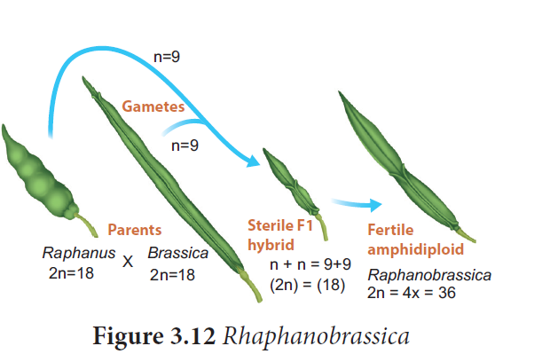
Raphanobrassica, G.D. Karpechenko OPEN BRACKET 1927 CLOSE BRACKET a Russian geneticist, crossed the radish OPEN BRACKET Raphanus sativus, 2n IS EQUAL TO18 CLOSE BRACKET and cabbage OPEN BRACKET Brassica oleracea, 2n IS EQUAL TO18 CLOSE BRACKET to produce F1 hybrid which was sterile. When he doubled the chromosome of F1 hybrid he got it fertile. He expected this plant to exhibit the root of radish and the leaves like cabbage, which would make the entire plant edible, but the case was vice versa, so he was greatly disappointed.
Example: 2 Triticale, the successful first man made cereal. Depending on the ploidy level Triticale can be divided into three main groups.
OPEN BRACKET 1 CLOSE BRACKET. Tetraploidy: Crosses between diploid wheat and rye.
OPEN BRACKET 2 CLOSE BRACKET. Hexaploidy: Crosses between tetraploid wheat Triticum durum OPEN BRACKET macaroni wheat CLOSE BRACKET and rye
OPEN BRACKET 3 CLOSE BRACKET. Octoploidy: Crosses between hexaploidy wheat T. aestivum OPEN BRACKET bread wheat CLOSE BRACKET and rye
Hexaploidy Triticale hybrid plants demonstrate characteristics of both macaroni wheat and rye.
For example, they combine the high-protein content of wheat with rye’s high content of the amino acid lysine, which is low in wheat. It can be explained by chart below OPEN BRACKET Figure: 3.14 CLOSE BRACKET.
parent generation Triticcum durum cross Secale cereale
2 n equal to 4 x equal to 28 2 n equal to 2 x equal to 14
Tetraploidy Diploidy
Gametes n equal to 2 x equal to 14 n equal to x equal to 7
F 1 hybrid open bracket sterile close bracket is given 2 n equal to 3 x equal to 21
open bracket Triplodiy close bracket chromosome doubling by colchicine
2 n equal to 6 x equal to 42
Triticale open bracket Hexaploidy close bracket
Box item
Colchicine , an alkaloid is extracted from root and corms of Colchicum autumnale, when applied in low concentration to the growing tips of the plants it will induce polyploidy. Surprisingly it does not affect the source plant Colchicum, due to presence of anticolchicine.
Box item
When two plants OPEN BRACKET A and B CLOSE BRACKET belonging to the same genus but different species are crossed, the F1 hybrid is viable and has more ornate flowers. Unfortunately, this hybrid is sterile and can only be propagated by vegetative cuttings. Explain the sterility of the hybrid and what would have to occur for the sterility of this hybrid to be reversed.
Many polyploids are more vigorous and more adaptable than diploids.
Many ornamental plants are autotetraploids and have larger flowers and longer flowering duration than diploids.
Autopolyploids usually have higher in fresh weight due to more water content.
Aneuploids are useful to determine the phenotypic effects of loss or gain of different chromosomes.
Many angiosperms are allopolyploids and they play a role in the evolution of plants.
2 Structural changes in chromosome OPEN BRACKET Structural chromosomal aberration CLOSE BRACKET
Structural variations caused by addition or deletion of a part of chromosome leading to rearrangement of genes is called structural chromosomal aberration. It occurs due to ionizing radiation or chemical compounds. On the basis of breaks and reunion in chromosomes, there are four types of aberrations. They are classified under two groups.
1. Deletion or Deficiency
2. Duplication or Repeat
B. Changes in the arrangement of gene loci
3. Inversion
4. Translocation
Loss of a portion of chromosome is called deletion. On the basis of location of breakage on chromosome, it is divided into terminal deletion and intercalary deletion. It occurs due to chemicals, drugs and radiations. It is observed in Drosophila and Maize. OPEN BRACKET Figure 3.14 CLOSE BRACKET
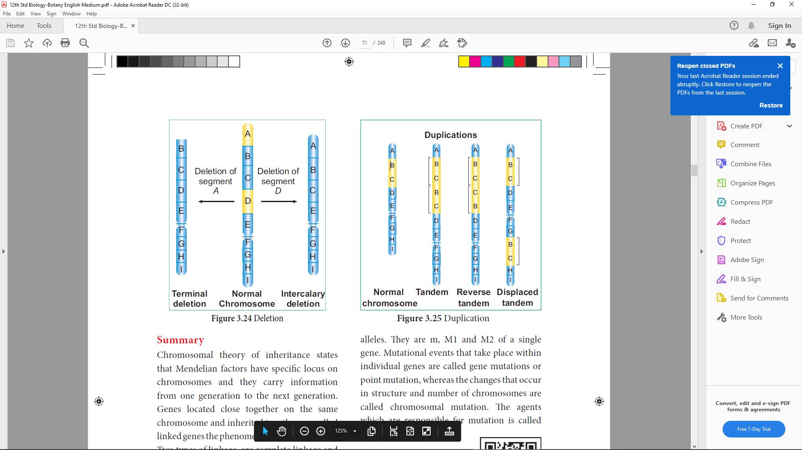
The process of arrangement of the same order of genes repeated more than once in the same chromosome is known as duplication. Due to duplication some genes are present in more than two copies. It was first reported in Drosophila by Bridges OPEN BRACKET 1919 CLOSE BRACKET and other examples are Maize and Pea. It is three types.
Figure 3.15 Duplication
A rearrangement of order of genes in achromosome by reversed by an angle 1800 .This involve two chromosomal breaks and reunion. During this process there is neither gain nor loss but the gene sequences is rearranged.inversion was first reported in Drosophila by Sturtevant(1926).There are two types of inversion ,paracentric and pericentric (figure 3.16)
Open bracket 1.closed bracket paracentric inversion An inversion which takes place apart from the centromere
inversion lead to evolution of a new species
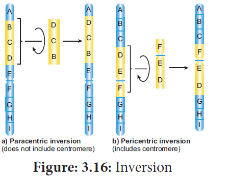
The transfer of a segment of chromosome to a non-homologous chromosome is called translocation. Translocation should not be confused with crossing over, in which an exchange of genetic material between homologous chromosome takes place. Translocation occurs as a result of interchange of chromosome segments in non-homologous chromosomes. There are three types
1. Simple translocation
2. Shift translocation
3. Reciprocal translocation
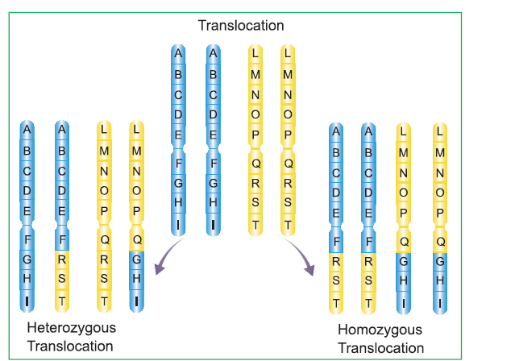
Summary
Chromosomal theory of inheritance states that Mendelian factors have specific locus on chromosomes and they carry information from one generation to the next generation. Genes located close together on the same chromosome and inherited together are called linked genes the phenomenon is called Linkage. Two types of linkage are complete linkage and incomplete linkage. The groups of linearly arranged linked genes are called Linkage groups. Crossing over is a biological process that produces new combination of genes by inter-changing the corresponding segments between non-sister chromatids of homologous pair of chromosomes. In this segment of DNA are broken and recombined to produce new combinations of alleles a process is called Recombination. The diagrammatic representation of distances between the adjacent genes which is directly proportional to the frequency of recombination between them is called genetic mapping. When any of the three or more allelic forms of a gene occupy the same locus in a given pair of homologous chromosomes, they are said to be multiple alleles. They are m, M1 and M2 of a single gene. Mutational events that take place within individual genes are called gene mutations or point mutation, whereas the changes that occur in structure and number of chromosomes are called chromosomal mutation. The agents which are responsible for mutation is called mutagen
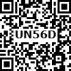
1. An allohexaploidy contains
a CLOSE BRACKET Six different genomes
b CLOSE BRACKET Six copies of three different genomes
c CLOSE BRACKET Two copies of three different genomes
d CLOSE BRACKET Six copies of one genome
2. Match list1 with list 2
List 1 |
List 2 |
A. A pair of chromosomes extra with diploid |
1 CLOSE BRACKET monosomy |
B. One chromosome extra to the diploid |
2 CLOSE BRACKET tetrasomy |
C. One chromosome loses from diploid |
3 CLOSE BRACKET trisomy |
D. Two individual chromosomes lose from diploid |
4 CLOSE BRACKET double monosomy |
a CLOSE BRACKET A-1, B-3, C-2, D-4
b CLOSE BRACKET A-2, B-3, C-4, D-1
c CLOSE BRACKET A-2, B-3, C-1, D-4
d CLOSE BRACKET A-3, B-2, C-1, D-4
3. Which of the following sentences are correct QUESTION MARK
1. The offspring exhibit only parental combinations due to incomplete linkage
2. The linked genes exhibit some crossing over in complete linkage
3. The separation of two linked genes are possible in incomplete linkage
4. Crossing over is absent in complete linkage
a CLOSE BRACKET 1 and 2
b CLOSE BRACKET 2 and 3
c CLOSE BRACKET 3 and 4
d CLOSE BRACKET 1 and 4
4. Due to incomplete linkage in maize, the ratio of parental and recombinants are
a CLOSE BRACKET 50:50
b CLOSE BRACKET 7:1:1:7
c CLOSE BRACKET 96.4: 3.6
d CLOSE BRACKET 1:7:7:1
5. The point mutation sequence for transition, transition, transversion and transversion in
DNA are
a CLOSE BRACKET A to T, T to A, C to G and G to C
b CLOSE BRACKET A to G, C to T, C to G and T to A
c CLOSE BRACKET C to G, A to G, T to A and G to A
d CLOSE BRACKET G to C, A to T, T to A and C to G
6. If haploid number in a cell is 18. The double monosomic and trisomic number will be
a CLOSE BRACKET 35 and 37
b CLOSE BRACKET 34 and 35
c CLOSE BRACKET 37 and 35
d CLOSE BRACKET 17 and 19
7. Changing the codon AGC to AGA represents
a CLOSE BRACKET missense mutation
b CLOSE BRACKET nonsense mutation
c CLOSE BRACKET frameshift mutation
d CLOSE BRACKET deletion mutation
8. Assertion OPEN BRACKET A CLOSE BRACKET: Gamma rays are generally use to induce mutation in wheat varieties.
Reason OPEN BRACKET R CLOSE BRACKET: Because they carry lower energy to non-ionize electrons from atom
a CLOSE BRACKET A is correct. R is correct explanation of A
b CLOSE BRACKET A is correct. R is not correct explanation of A
c CLOSE BRACKET A is correct. R is wrong explanation of A
d CLOSE BRACKET A and R is wrong
9. When two different genes came from same parent they tend to remain together.
i CLOSE BRACKET What is the name of this phenomenon QUESTION MARK
ii CLOSE BRACKET Draw the cross with suitable example.
iii CLOSE BRACKET Write the observed phenotypic ratio.
10. What is the difference between missense and nonsense mutation QUESTION MARK
11.
From the above figure identify the type of mutation and explain it.
12. Write the salient features of Sutton and Boveri concept.
13. Explain the mechanism of crossing over.
14. How is Nicotiana exhibit selfincompatibility. Explain its mechanism.
15. How sex is determined in monoecious plants. write their genes involved in it.
16. What is gene mapping QUESTION MARK Write its uses.
17. Draw the diagram of different types of aneuploidy.
18. Mention the name of man-made cereal. How it is formed QUESTION MARK
Branch Migration:
The process in which base pairs on homologous strands are consequently exchanged at a Holliday junction, moving the branch up or down the DNA sequence.
Cis configuration:
The presence of dominant alleles of two or more pairs on one chromosome and the recessive
alleles on the homologous chromosome.
Feminizing Masculinizing:
To induce female characteristics in male To induce male characteristics in female
Heteroduplex:
A double stranded molecule of nucleic acid originated through genetic recombination from different sources
Self incompatibility:
A genetic mechanism which prevent self fertilization thus encourage outcross.
Synapsis:
The pairing of two homologous chromosomes that occurs during meiosis.
Tassel seed:
Feminization of the tassel
Trans configuration:
An arrangement in which the dominant allele of one pair of genes and the recessive allele of another pair are on the same chromosome
Transesterification:
A reaction that breaks and makes chemical bonds in a coordinated transfer, so that no energy is required.
Vestigial:
Rudimentary organ of body become functionless in the course of evolution